O Segredo na Floresta é a segunda temporada da série Ordem Paranormal, continuação de A Ordem Paranormal. É uma campanha de RPG de mesa baseada em uma versão adaptada do sistema Chamado de Cthulhu (do inglês, Call of Cthulhu). Mestrada pelo streamer Cellbit, é protagonizada por Cesar Oliveira Cohen, Cristopher Cohen, Elizabeth Webber, Joui Jouki, Thiago Fritz e posteriormente Arthur Cervero.
A série era jogada ao vivo na Twitch, e durou de 11 de abril a 25 de julho de 2020, compreendendo 16 episódios de, em média, 4 a 3 horas cada. Os episódios podem ser encontrados também no Youtube, no canal Lives do Cellbit.
Em 1° de agosto de 2020, houve uma stream especial em que os jogadores se reuniram para discutir os eventos da temporada e seus personagens, além de elucidar as dúvidas dos espectadores e revelar alguns dos segredos que não foram descobertos ao longo da série.
No dia 11 de abril, por volta das dez horas da manhã, uma Equipe da Ordem da Realidade (nessa época chamada de "Ordem da Verdade") tem uma reunião marcada com o homem conhecido como Senhor Veríssimo na grande torre comercial Alfa, na avenida Faria Lima, em São Paulo. O primeiro a chegar é Joui Jouki, que após procurar pela sala de reunião indicada por Senhor Veríssimo, se encontra com os outros membros de sua equipe: Cristopher Cohen, Cesar Oliveira, Thiago Fritz e Elizabeth Webber.
Todos partem até a sala de Veríssimo e lá ele os apresenta a Equipe Kelvin, uma equipe de agentes veteranos que foram enviados para uma cidade no interior do Rio Grande do Sul para investigar um estranho caso de assassinato envolvendo um símbolo espiral e que acabou desaparecendo misteriosamente sem nenhum aviso prévio.
Após discutirem mais sobre a missão, todos se despedem de Veríssimo, se preparam e partem rapidamente até o aeroporto de São Paulo, indo em direção a cidade de Carpazinha com o objetivo de encontrar Miguel Cariad, Mariana Larona e Kenan Thomas.
Cinco membros da Ordo Realitas - os veteranos Thiago Fritz e Elizabeth Webber, assim como os novatos Joui Jouki, Cristopher Cohen e seu filho, Cesar Oliveira - são enviados para Carpazinha, interior do Rio Grande do Sul. Lá, eles precisam investigar a estranha morte de um homem local e o desaparecimento de uma equipe da Ordem.
Investigando uma lenda local, Thiago, Liz, Cris, Joui e Cesar vão ao antigo sanatório da cidade, onde descobrem mais sobre o sombrio passado da cidade e enfrentam o que restou do terror daquele tempo.
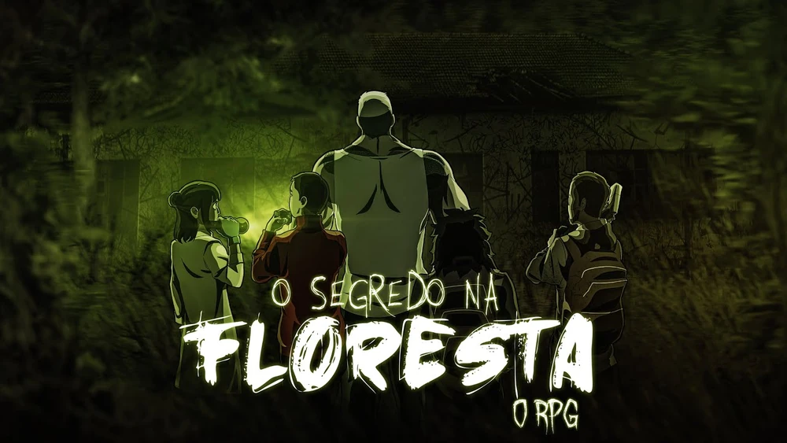Ao visitar o bar Suvaco Seco, a equipe se depara com um terrível assassinato próximo ao local, e, com a ajuda de Arthur, um músico da cidade, precisa adentrar a floresta e enfrentar o horror que nela se esconde.
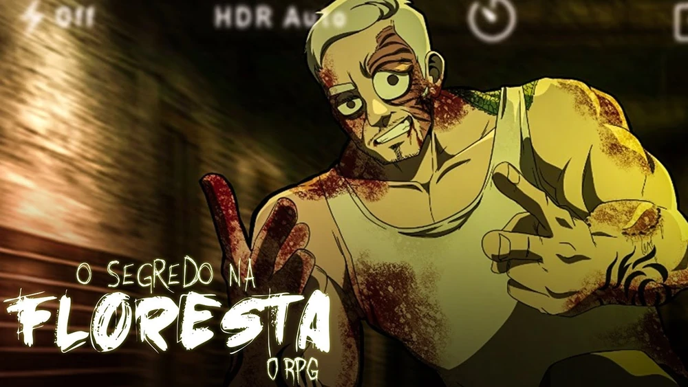O enterro de um dos seus chacoalha a equipe. O passado de Brúlio, líder da gangue de motoqueiros local, dá pistas sobre uma das bases de operação ocultistas.
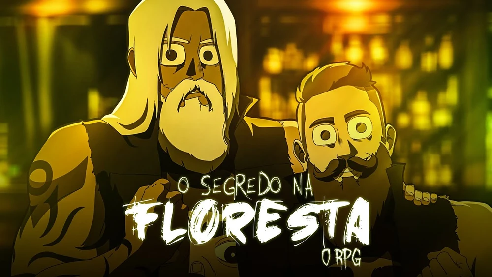Enquanto investigam a casa na floresta, a equipe se depara com pistas, aberrações e morte.
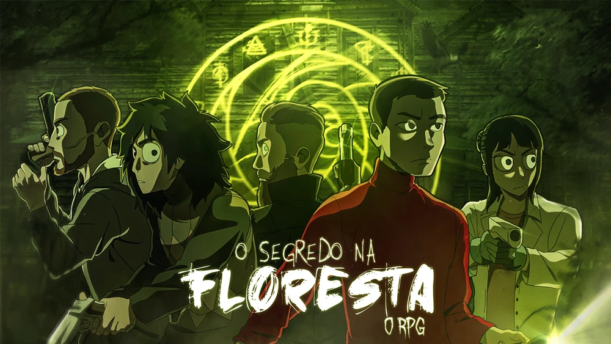Uma intensa batalha deixa cicatrizes na equipe, tanto físicas quanto mentais.
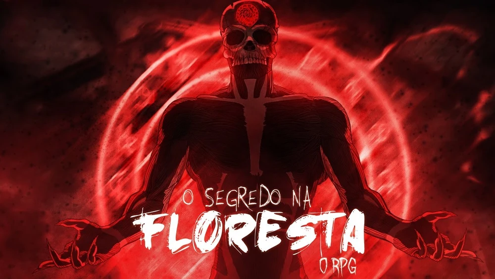Após concluir uma varredura no casarão, a equipe investiga uma estranha ocorrência no Cemitério de Carpazinha.
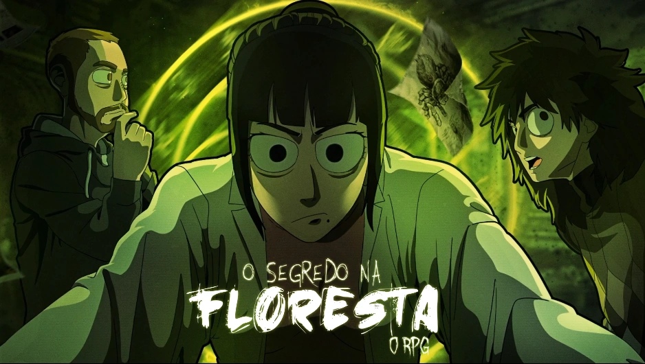Ainda se recuperando das perdas e fraturas de sua missão, a equipe tira a noite para repassar as informações do caso. Isso até Elizabeth introduzir o jogo "Eu Nunca" ao grupo.
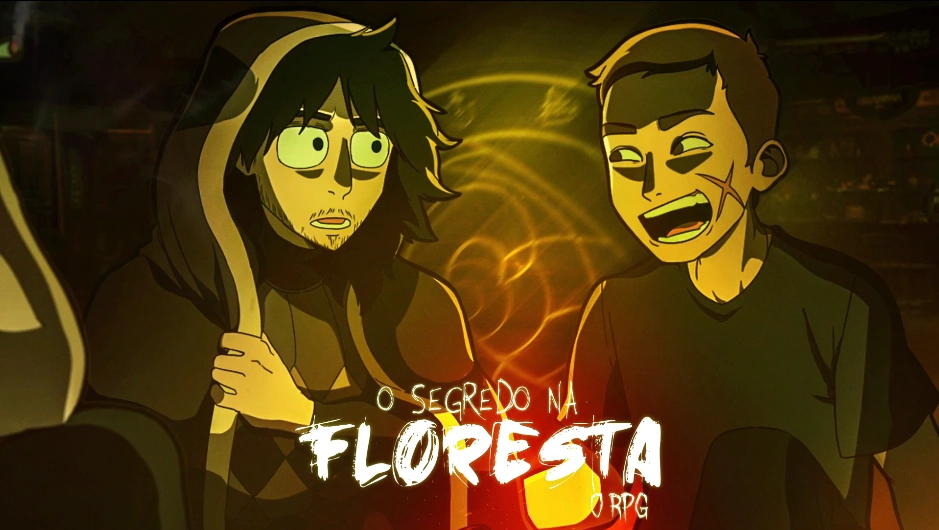A equipe encontra a perdida cidade de Santo Berço, isolada do mundo entre a floresta. Lá, eles conhecem seus estranhos habitantes e as lendas e perigos nela escondidos.
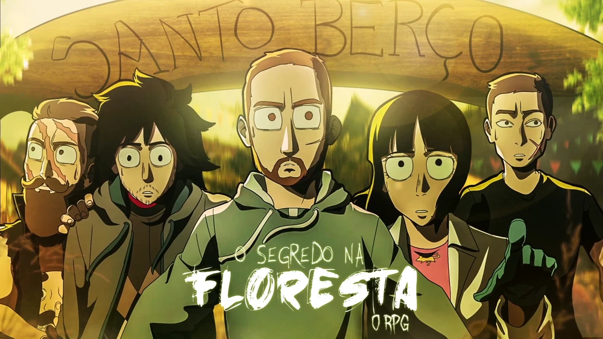Após escaparem das criaturas da noite de Santo Berço, a equipe se hospeda no hotel do vilarejo - apenas para passar por uma das mais traumáticas experiências de suas vidas.
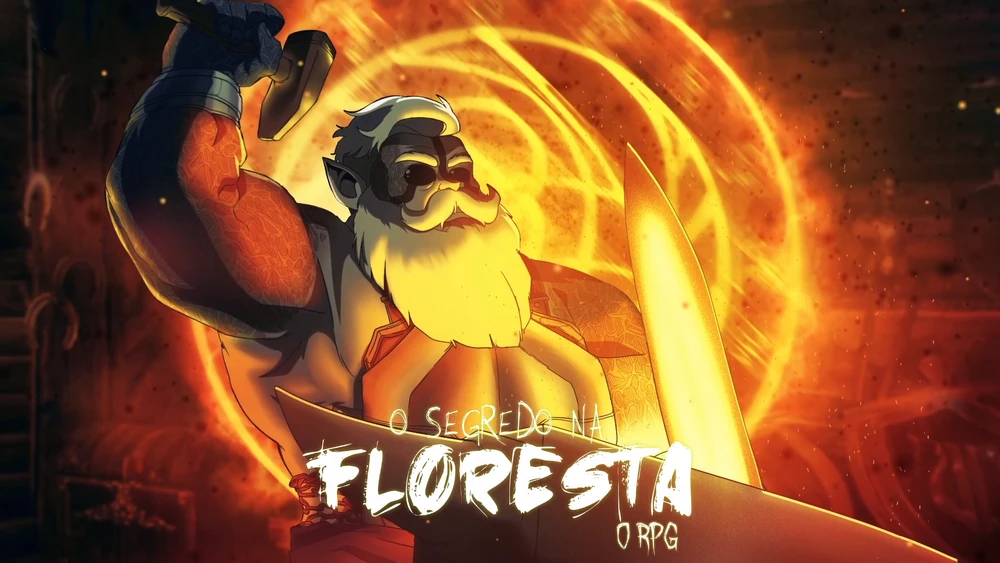Com o Santo Berço em luto pela morte de um dos seus, a equipe tenta descobrir que tipo de criatura está atacando os animais da fazenda.
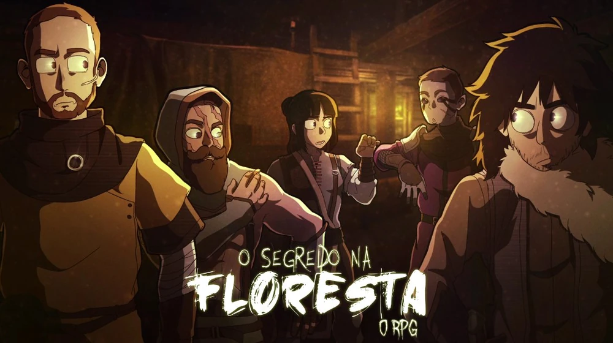Com o corpo de um luzídio selvagem a seus pés, a equipe enfrenta uma leva de monstros na névoa da floresta até voltar ao Santo Berço. Lá, descobrem a verdade sobre um de seus mais queridos habitantes.
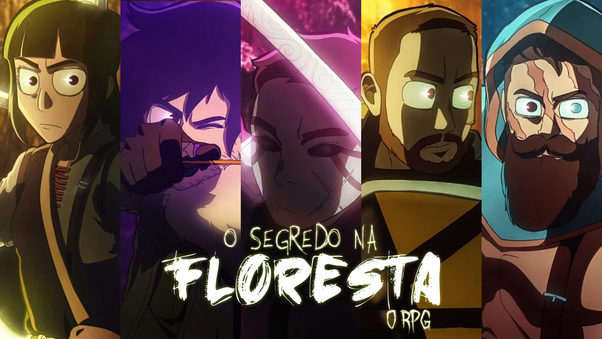Dentre a névoa e os brilhantes cristais da caverna de Santo Berço, o grupo firma seu companheirismo, enfrenta monstros horríveis e encontra mais respostas do que esperavam.
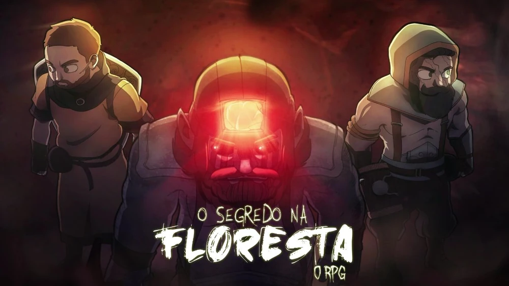A equipe atravessa a porta da mina e faz descobertas sobre a origem e o funcionamento do Santo Berço. Liz e Thiago encontram ligações com um caso antigo, e o peso de um sacrifício divide o grupo.
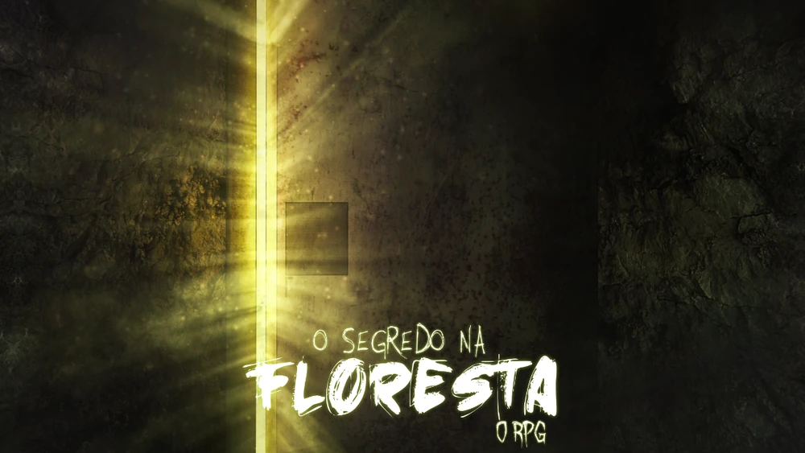A Equipe E encontra um dos membros da Equipe Kelvin dentro do Labirinto. Ele conta sobre a missão do grupo em Carpazinha, sua chegada ao Santo Berço e seu trágico destino.
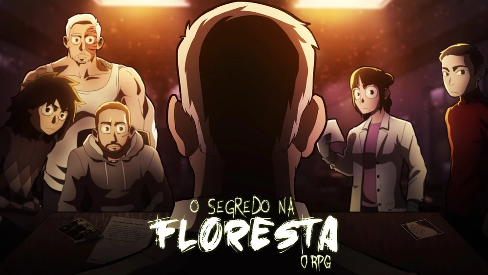A Equipe E ruma ao coração de Santo Berço com explosivos para destruí-lo. Lutando com a morte e a loucura, Liz, Thiago, Joui, Cesar e Arthur descobrem que dar sua vida para cumprir a missão pode significar algo ainda mais macabro do que pensavam.
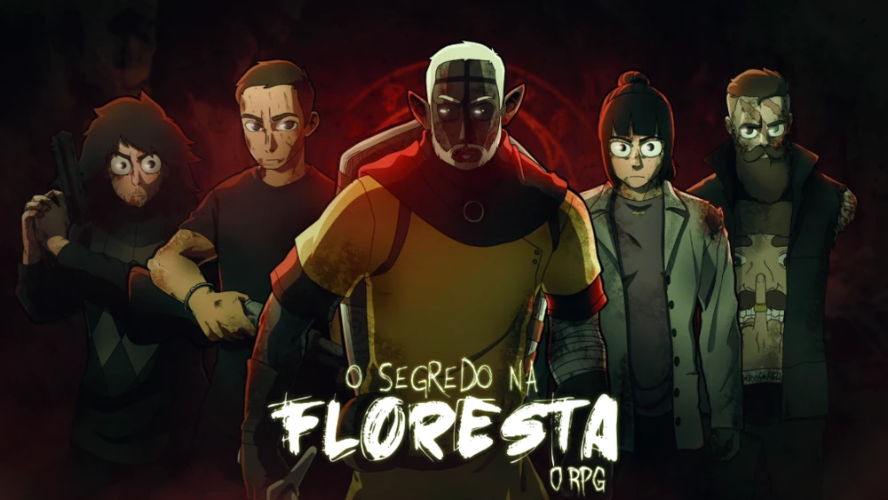